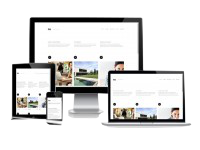

"Pasja, różnorodne doświadczenie oraz szukanie najlepszych rozwiązań - to klucz do udanych projektów i nasze zasady, którymi kierujemy się przy każdym projekcie dla naszego klienta" - Jan Nowak CEO Moon Agency
Jeżeli chcesz zaistnieć w sieci, zdobywać nowych klientów na swoje usługi zbuduję Ci profesjonalną oraz skalowalną stronę (Responsive Web Design) która będzie skutecznym narzędziem w osiągnięciu zamierzonego celu. Zbuduję stronę z panelem CMS WordPress, skalowalną, dostosowaną do Twoich potrzeb.

Do każdego zlecenia podchodzę indywidualnie. Pierwszym i ważnym krokiem przed przygotowaniem strony jest poznanie oczekiwań klienta (branży w której działa, efektu jaki chce uzyskać, preferowanej kolorystyce itp.). Następnie przystępuje do tworzenia niezobowiązującego projektu strony. Po wykonaniu klient ocenia stronę online i może nanieść ewentualne uwagi. Zapewniam dobry kontakt po wykonaniu zlecenia (bezpłatna i nieograniczona w czasie pomoc z zakresu edycji strony). Skontaktuj się ze mną, przedstaw ogólne oczekiwania, a przygotuję projekt witryny działający w sieci który będziesz mógł obejrzeć i ocenić. Projekt jest niezobowiązujący i nic nie ryzykujesz. Jeśli będzie odpowiadał Twoim oczekiwaniom, współpracujemy dalej i kończymy budowę.
Otrzymasz kompletną witrynę w trakcie pracy doceniam uwagi i sugestie klienta a gdy po obejrzeniu projektu online uznasz, że czegoś brakuje, że może coś byłoby trzeba zmienić zostanie to niezwłocznie poprawione. Strony zbudowane na życzenie klienta mogę pozostawić na swoim serwerze, pierwszy rok hostowania za free, następny rok to koszt około 50zł / miesiąc. Daną stronę instaluję na serwerze, umieszczę pod docelową domeną (jeśli trzeba pomogę ją wybrać. Nazwa domeny wbrew pozorom jest również ważna), utworzę konto/a pocztowe i ftp, dodam witrynę do wyszukiwarek. Przenosząc się do mnie z obecnego serwera nic nie ryzykujesz ponieważ pierwszy rok jest już opłacony. Zapewniam nieodpłatną pomoc z zakresu edycji strony.
Tworzenie strony od nowa to stosunkowo duży wydatek, jeżeli myślimy o nowej stronie internetowej mimo, że nasza aktualna publikacja została przygotowana według standardów i spełnia swoje zadanie to zwykle wymaga jedynie odświeżenia lub jak kto woli modernizacji.
Aktualizacja może dotyczyć wyglądu oraz funkcjonalności. Niektóre modernizacje można wykonać szybko, np. dodanie przycisków portali społecznościowych zajmie nam parę chwil. Design Wygląd najwyraźniej zdradza nam wiek strony tak jak to bywa z różnymi innymi rzeczami. W tej sferze mamy też największe pole do popisu. Na pierwszy ogień niech pójdzie kolorystyka. Aktualnie we wzornictwie internetowym dominują złamane, delikatne kolory i myślę że tak będzie jeszcze jakiś czas.
Chcąc nadać stronie uniwersalnego i ponadczasowego wyrazu stosujmy dużo bieli i odcienie szarości. Często staram się wszystkich do nich przekonywać. Jaskrawe i czyste kolory budzą skojarzenia z domyślnym formatowaniem na stronach internetowych, styl ten znudził się i po prostu nie zachęca - mam tutaj na myśli np. niebieskie linki. To co zauważalnie skończyło swój termin przydatności to gęsto stosowane gradienty, nie są cechą tzw. flat designu stąd od razu nasuwają nam na myśl lata przed 2010 rokiem kiedy to wręcz triumfowały. To samo tyczy się wyraźnych cieni, obramowań i zaokrąglonych krawędzi stosowanych wtedy bez umiaru.
Poznajmy się! Cześć, mam na imię Robert. Tworzeniem stron internetowych zajmuję się od 2012r, doświadczenie poprzez fascynację i zabawę nauczyło mnie że prawdziwa estetyka tkwi w lekkości i prostocie. Łączę aktualne trendy, ze stałymi zasadami designu. Nie lubię bezcelowej brawury. Mój cel to pełne zadowolenie klientów, uzyskane poprzez ogólną harmonię, która idzie w parze z użytecznością. Stawiam na długofalową współpracę i trwałe relacje partnerskie. Poprawki oraz drobne aktualizacje wykonuję bezpłatnie. Oferuję pomoc w zakresie hostingu, rozbudowy, odnowy starych witryn internetowych a także pozycjonowania.
Witam! Z przyjemnością pragnę poinformować, że od dnia 2.10.2017 roku akceptuje płatności w Bitcoinach!
Klucz publiczny: 1NmXs8G7Crf5ss6m8NrTJ2LTGumEkNvfeP
Jako osoba prywatna oferuje: - tworzenie stron WWW, - projekty graficzne, logo - marketing internetowy. RABAT -5% Dla klientów, którzy wybiorą sposób zapłaty w Bitcoinie obowiązują zniżki w wysokości -5% od naszych podstawowych cen! Jest to pewien sposób docenienia oraz nagroda dla tych, którzy chcą rozwijać i popularyzować nowe technologie razem z nami! Lokalizacja: Kraków ul. Stojałowskiego 17, zasięg świadczenia usług - Cała Polska - Internet. Zapraszam do kontaktu.
"Pasja, różnorodne doświadczenie oraz szukanie najlepszych rozwiązań - to klucz do udanych projektów i nasze zasady, którymi kierujemy się przy każdym projekcie dla naszego klienta" - Jan Nowak CEO Moon Agency

"Wielu klientów przychodzi do nas z projektami, które są kluczowe w rozwoju ich firm. Dlatego całe nasze serce i umiejetności całego zespołu zostawiamy w ich projektach" - Ania Kowalska CTO Moon Agency
W tej części strony będzie formulaż kontaktowy
W tej części strony będzie formulaż kontaktowy
W tej części strony będzie formulaż kontaktowy
W tej części strony będzie formulaż kontaktowy
W tej części strony będzie formulaż kontaktowy
W tej części strony będzie formulaż kontaktowy